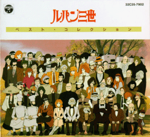

Lupin 3rd

From the Anime Pocket Guide:
Cast:
Arsene Lupin III ........................... Yasuo Yamada
Jigen Daisuke ......................... Kiyoshi Kobayashi
Goemon Ishikawa (1st series) ............. Chikao Ohtsuka
Goemon Ishikawa (after 1st series) .......... Makio Inoue
Fujiko Mine (after 1st series) ........ Eiko Masuyama
Inspector Zenigata ........................... Goroh Naya
Maki Ooyamada (Farewell Lupin) ....... Sumi Shimamoto
Lady Clarisse de Cagliostro .............. Sumi Shimamoto
Count Caglistro (Cagliosto Castle) ....... Taroh Ishida
Jodo (Caglistro Castle) ...... Ichirou Nagai
{unknown} (Caglistro Castle) ...... Masayuki Kato
{unknown} (Caglistro Castle) .. Shigeharu Matsuda
Caramel (Babylon) ................. Fumi Hirano
Lazanya (Babylon) ............... Saeko Shimazu
Saranda (Babylon) .................. Keiko Toda
Chinjao (Babylon) ................... Keiko Han
Rosetta (Babylon) ................. Naoko Kawai
Lupin III (Fuuma Clan) .......... Toshio Furukawa
Jigen Daisuke (Fuuma Clan) ............. Banjou Ginga
Goemon Ishikawa (Fuuma Clan) .......... Kaneto Shiozawa
Kazami (Fuuma Clan) ............ Shigeru Chiba
Fujiko Mine (Fuuma Clan) .............. Mami Koyama
Murasaki Inabe (Fuuma Clan) .............. Mayumi Shoh
Inspector Zenigata (Fuuma Clan) ........... Seizou Kato
Boss (Fuuma Clan) ........... Masashi Hirose
Gakusha (Fuuma Clan) ......... Shigeru Nakahara
Fuuma A (Fuuma Clan) ........... Yuuichi Meguro
Fuuma B (Fuuma Clan) ........ Kouichi Hashimoto
Fuuma C (Fuuma Clan) ........ Toshiharu Sakurai
taichou (Fuuma Clan) ........... Yutaka Shimaka
officer C (Fuuma Clan) ....... Tomohiro Nishimura
Lupin III (pilot version) ...... Taichirou Hirokawa
Mckaram (Napoleon) ............... Akio Ohtsuka
Miss Catherine (Emerald's Secret) ...... Eiko Masuyama
Maria (Hemmingway Papers) ....... Yuko Sasaki
Judy (Russia with Love) ........ Yuko Sasaki
Karen (Lupin Assasination) .... Atsuko Tanaka
Butcho ................................. Kouichi Kitamura
Description:
One of the greatest thieves in the world is a man known as Lupin.
Once he gets his sights on something valuable, nothing can stop
the theft. Along with his gang, Lupin travels the world in
search of loot. In his wake is the Interpol Inspector Zenigata
who will stop at almost nothing to capture Lupin. As the two men
match wits against each other, we are treated to some truly
enjoyable "Cops and Robbers" stories...often in an action-comedy
vein. Naturally, Lupin is the one who usually comes out on top.
The blotter reads as follows:
Arsene Lupin III: The head man. Grandson of the famous French
thief Arsene Lupin, Lupin does his best to live up to his
grandfather's reputation. He is an ingenious thief with a
streak of morality and honor.
Jigen Daisuke: Lupin's right-hand man. Jigen looks and dresses
like a 1930's era mobster and is a dead shot with his
beloved revolver. Formally an enforcer with a Chicago mob,
Jigen got into trouble, so he left for Japan and changed his
name. He is Lupin's confidant and best friend.
Goemon Ishikawa: A descendant of a Japanese thief of the same
name, Goemon is the archtypical samurai. He has an austure
life style and shuns women. With his discipline, he can
perform amazing feats with his sword, though he considers it
dishonorable to cut non-living things...something that seems
to be common while he hangs around Lupin.
Fujiko Miine: She is not really a member of Lupin's group. A
mercenary by trade, she often has her own thing going and
often uses her devastating physical proportions for her own
advantage. She calls upon Lupin only for a) help if she gets
in over her head or b) if she needs a dupe to take the blame.
Fujiko often competes for the same targets as Lupin. Some-
times, Fujiko even *helps* Lupin!
Koichi Zenigata: A descendant of a famous Edo-period Japanese
Policeman (well, why not? :-)), Zenigata is charged to catch
Lupin. He has been given carte blanche by Interpol to use
any method necessary. He is a completely incorruptible cop
who has an amazing skill with handcuffs. He is also a sharp
detective whose only failing is that Lupin is better. Both
men share a grudging respect for each other.
Legal note: "Arsene Lupin" is a trademark owned by the estate of
Maurice LeBlanc (who wrote the original novels). Permission
was never given for use outside of Japan, so that is why US
releases use different names (i.e. "Rupan" for AnimEigo and
"Wolf" for Streamline Pictures).
Other Resources
Anime Video Game Resource Center © 1998 by Luis A. Cruz